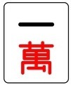
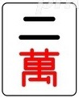
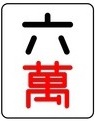

まーじゃんでーた
麻雀牌一覧
役一覧
用語一覧
アガりの形
いろんな役でアガりたい！
点数について
よく使われる用語一覧
対子
(トイツ)
順子
(シュンツ)
刻子
(コーツ)
槓子
(カンツ)
チー
ポン
カン
門前清
(メンゼン)
食い下がり
面子
(メンツ)
雀頭
(ジャントウ/アタマ)
和了
(アガり)
聴牌
(テンパイ)
一向聴
(イーシャンテン)
振聴
(フリテン)
ツモ
ロン
両面
(リャンメン)
嵌張
(カンチャン)
辺張
(ペンチャン)
双ポン
(シャンポン)
単騎
(タンキ)
筋
(スジ)
安牌
(アンパイ)
飜
(ハン)
符
(フ)
麻雀用語解説
振聴(フリテン)
解説
自分が
聴牌(テンパイ)
の状態で、自分の捨て牌に
アガり牌
がある場合、その
アガり牌
で
ロン
アガりできない状態になってしまいます。この状態を振聴といいます。
また、振聴となる
アガり牌
は、一種類とは限りません。
例えば自分が
聴牌(テンパイ)
で、最後の
面子(メンツ)
を
で待っていたとすると、
アガり牌
は
両面(リャンメン)
の
二種類となります。詳しくはこちら→
アガり牌
上記の場合、
を捨ててしまっていた場合は同じく
アガり牌
でもある
も同様に
ロン
できなくなるということです。
その他にも、他のプレイヤーが自分の
アガり牌
を捨てたのに、それを
ロン
せず見逃してしまった場合、以降振聴状態になってしまいます。
立直(リーチ)
宣言時なら宣言したところから見逃しNGとなり、ただの
聴牌(テンパイ)
時の場合はその一巡以内でのみ、見逃したその後で
ロン
アガりすることができなくなります。
ただし、振聴になっても
ロン
アガりできなくなってしまいますが、
ツモ
アガりなら可能です。
カテゴリー
麻雀データ
麻雀牌一覧
役一覧
用語一覧
麻雀を始めよう
ゲームの流れ
アガりの形
待ち方
いろんな役でアガりたい！
点数について
流局について
 用語一覧
用語一覧 アガりの形
アガりの形 いろんな役でアガりたい！用語一覧アガりの形いろんな役でアガりたい！で待っていたとすると、アガり牌は両面(リャンメン)の二種類となります。詳しくはこちら→アガり牌も同様にロンできなくなるということです。
いろんな役でアガりたい！用語一覧アガりの形いろんな役でアガりたい！で待っていたとすると、アガり牌は両面(リャンメン)の二種類となります。詳しくはこちら→アガり牌も同様にロンできなくなるということです。